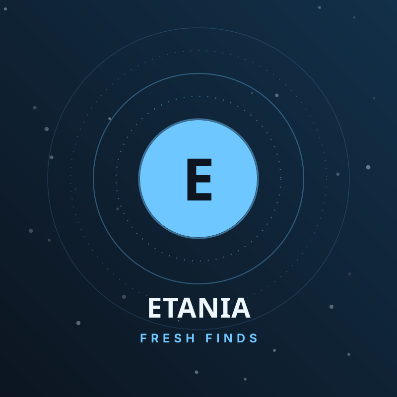
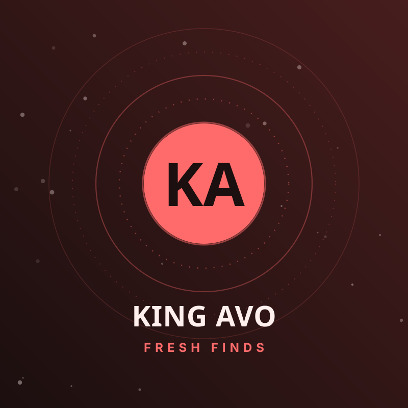
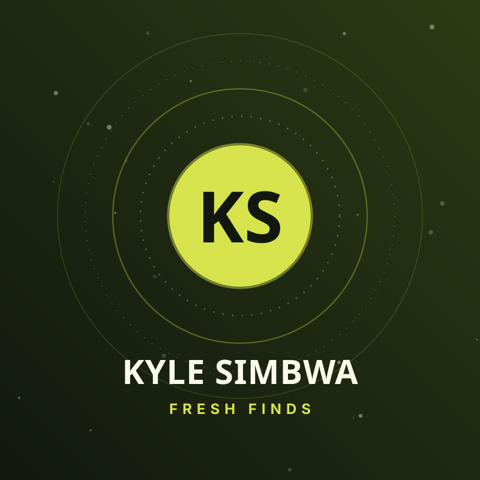
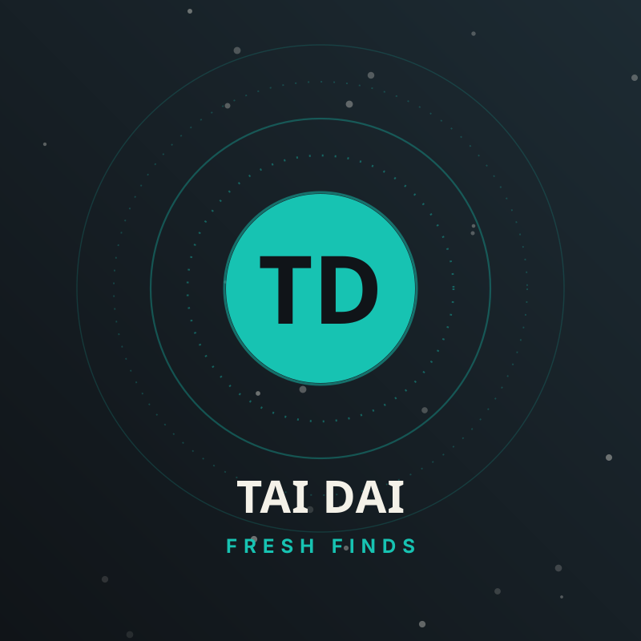
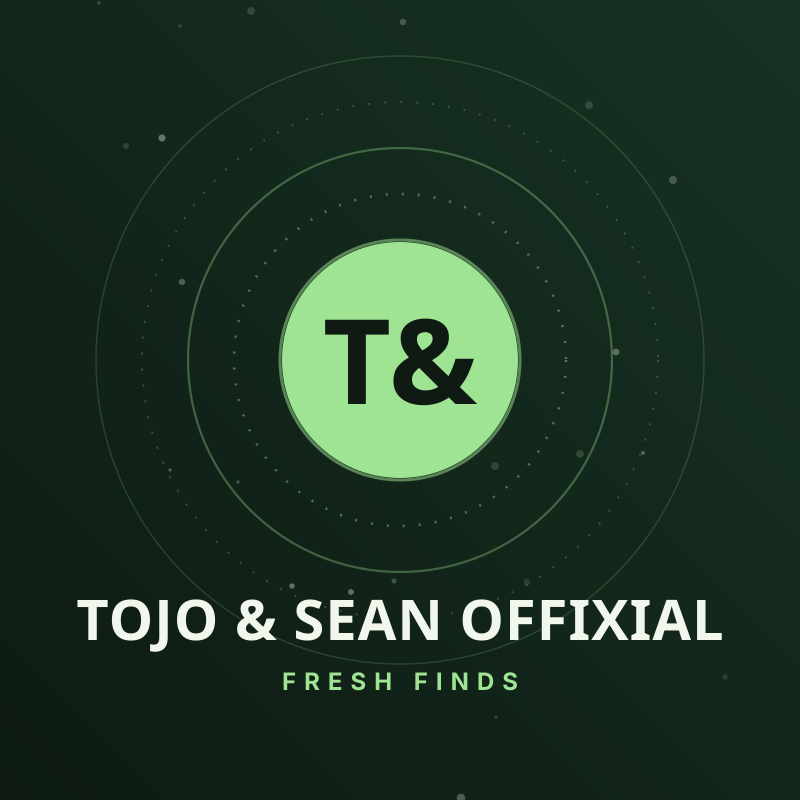
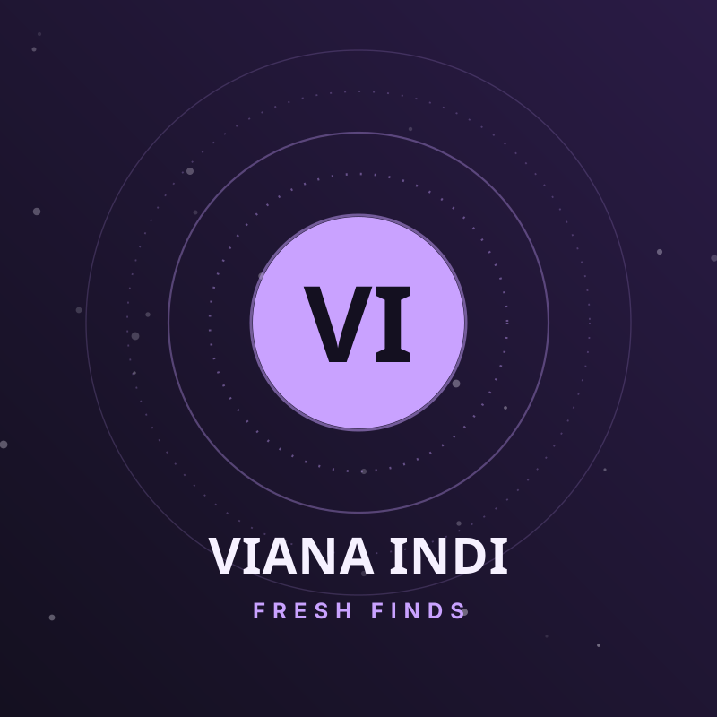
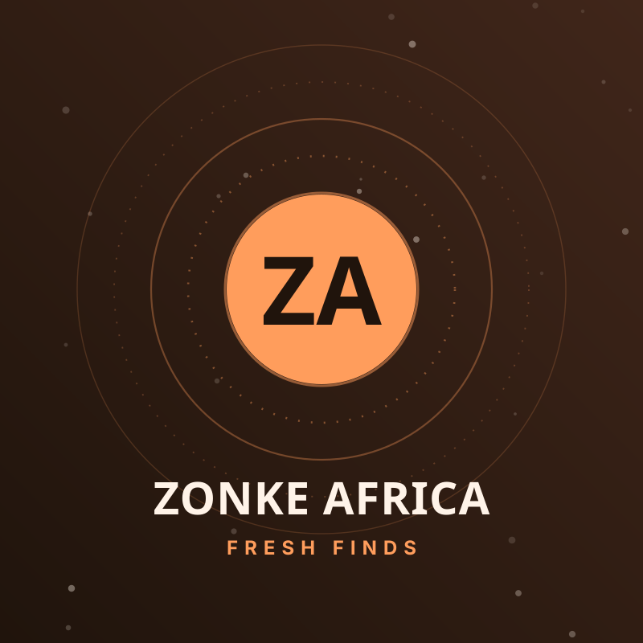

Etania
DJ · Producer
The self-styled “Life of the Party” — a selector whose afro-house and amapiano sets refuse to let a room sit down.
One home for every artist we are backing — Fresh Finds and the former Spotlight Artists, merged into a single category.
One home, one category: Fresh Finds now includes every former Spotlight Artist — the whole roster we are backing, alphabetically, plus their stories.

DJ · Producer
The self-styled “Life of the Party” — a selector whose afro-house and amapiano sets refuse to let a room sit down.

Artist · EP
Street-pop storyteller with a hook-first pen. The “Baddest EP” era put his name on every playlist we run.

Singer-Songwriter
Folk-tinted afro-soul and a live voice that carries open fields. “Mvule” made him impossible to ignore this season.

Alt-Afro
Colour-outside-the-lines alt-afro with psychedelic guitar lines and dyed-slow melodies.
Producer · DJ
Beat-maker fluent in log drums and 808s; his productions compile like clean, dangerous code.

Duo
A call-and-response duo whose “Offix Session” tapes turned desk-hour humour into dancefloor currency.

Vocalist
Velvet-toned vocalist blending kadongo kamu warmth with modern R&B gloss.

Afro-Soul Collective
A live collective chasing one sound: every language of Kampala singing over the same groove.